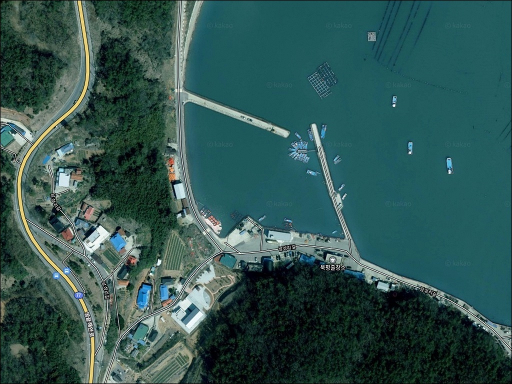
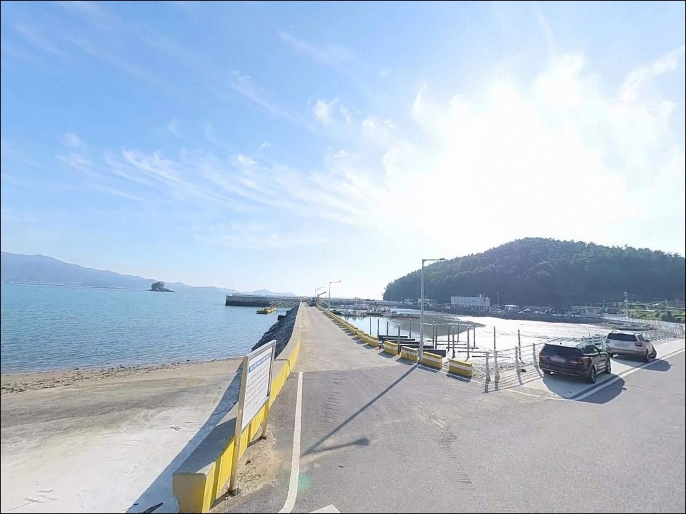
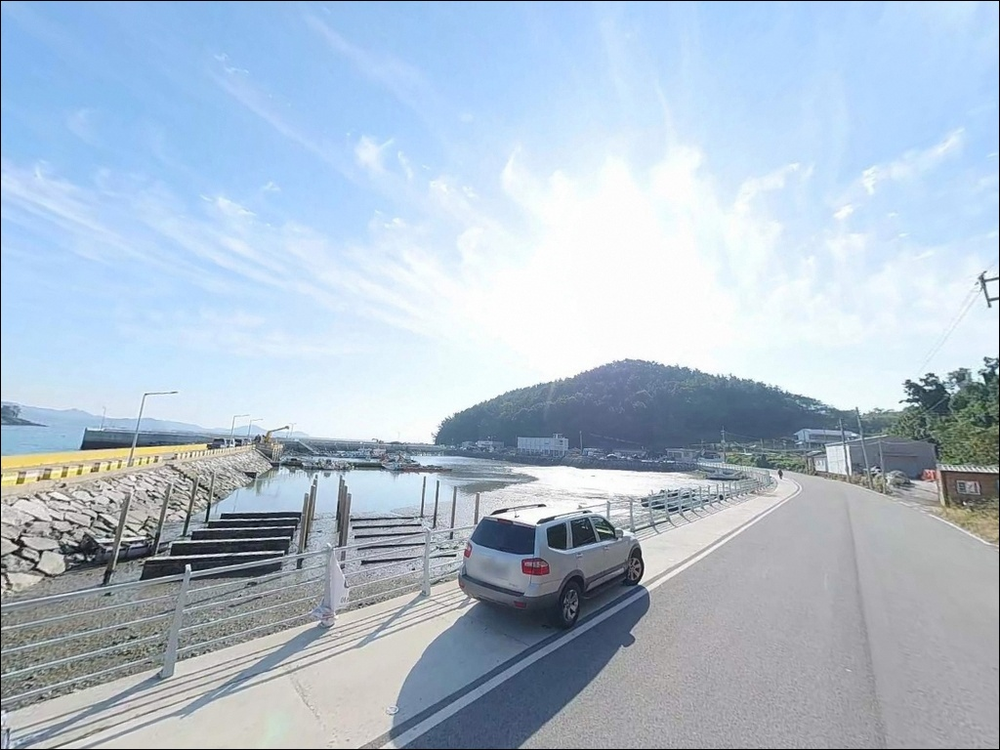
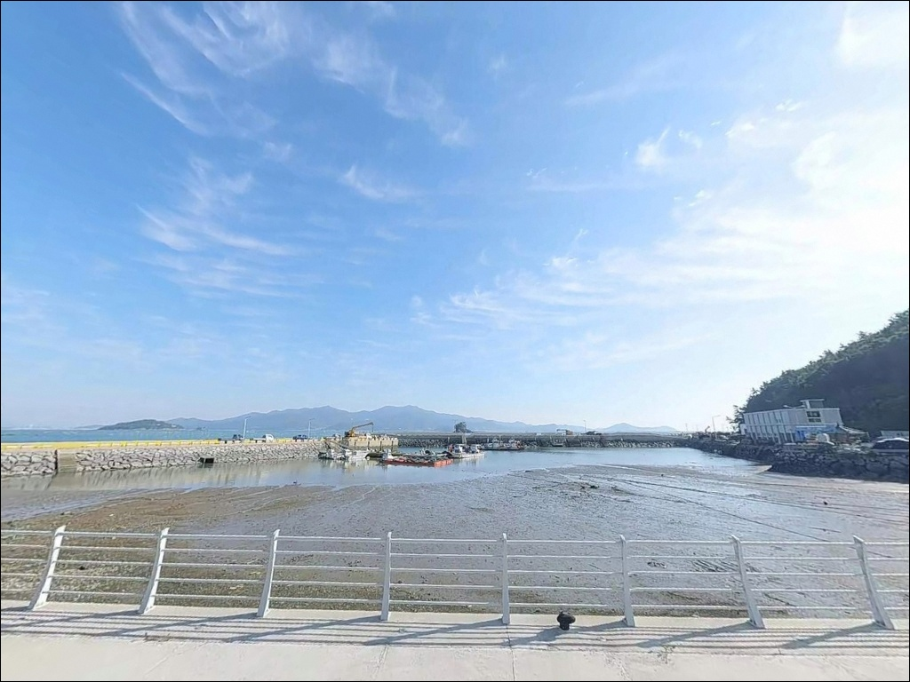
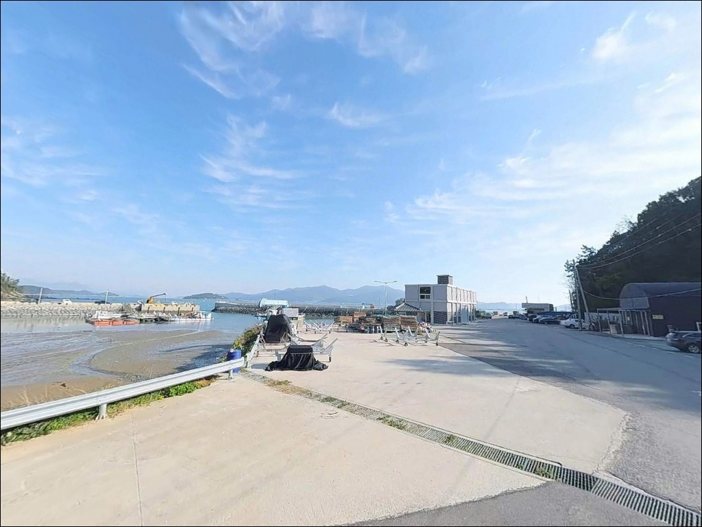
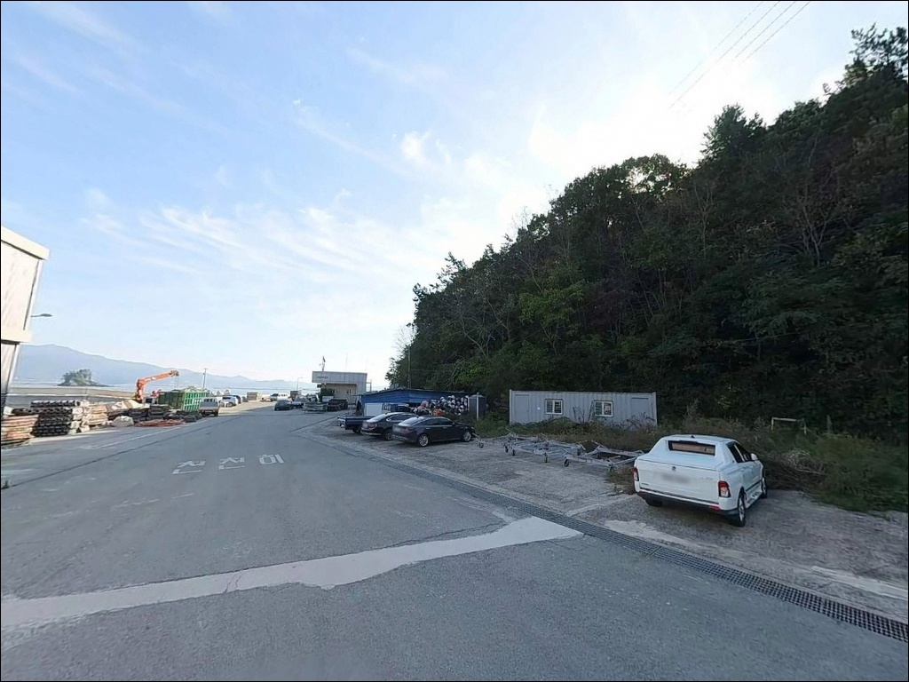
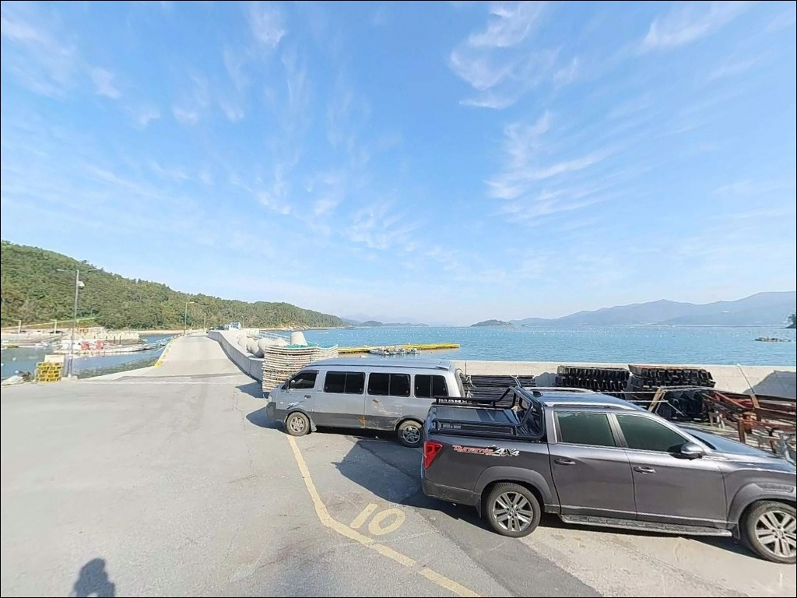
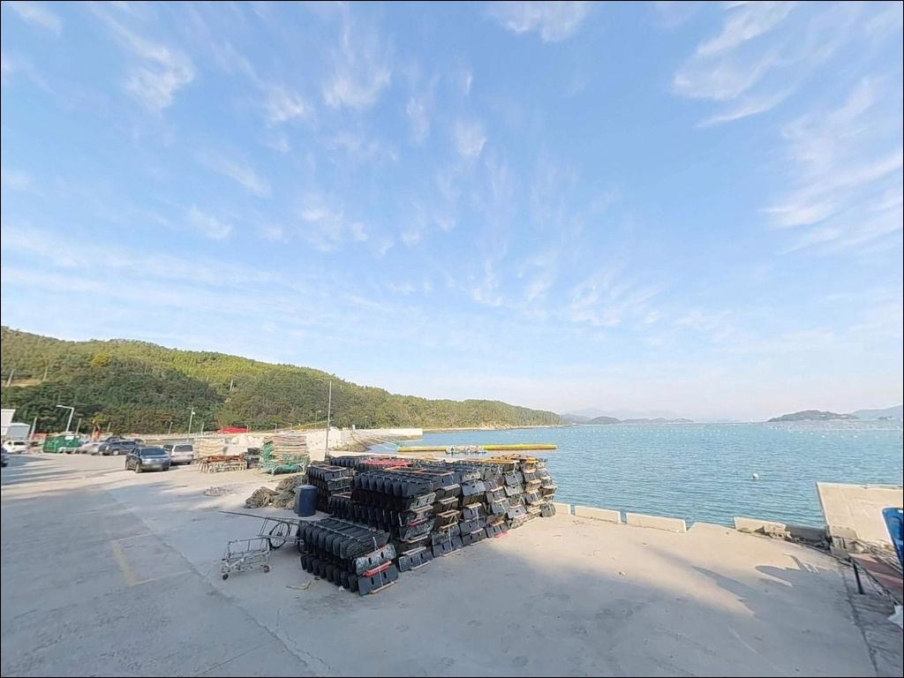
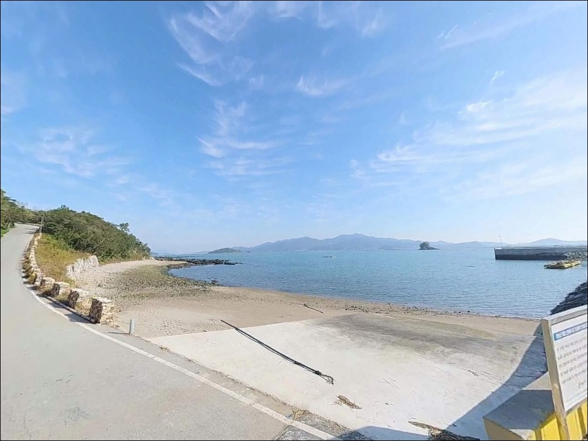

남성항, 전남 해남군 숨은 보석 같은 청정 지역 바다 차박 낚시 명소
이 페이지에는 광고(제휴 링크 포함)가 있으며, 광고 링크를 통해 구매하면 운영자가 판매 수익 또는 수수료를 받을 수 있습니다. 포인트 사진: 카카오맵 스카이뷰·로드뷰. 이 페이지의 지도·사진 이미지는 카카오맵의 실제 서비스 이미지와 다를 수 있습니다.


포인트 안내
남성항
전남 해남군 북평면 영전리 1433-16
남성항은 외항이 완도 해협 방향으로 열려 있어,
기상 확인 없이 방문하면
바람 탓에 방파제 끝단 자리를 버티기 어려운 구조입니다.
조류가 강한 사리 전후에는 채비 컨트롤이 불가능해지는
타이밍이 있어,
입장 시각 판단이 조과와 직결되는 포인트입니다.
이 글은 남성항의 방파제 구조, 진입 환경,
물때 판단 기준, 낚시 스타일별 공략 조건에 집중합니다.
조황 단정이나 특정 어종 보장은
이 글의 범위에 포함되지 않습니다.

1. 진입 동선과 포인트 접근성
남성항은 2023년 어촌뉴딜300사업을 통해
해안도로 180m 구간이 정비·포장 완료된 상태입니다.
마을 도로를 거쳐 진입하는 구조이지만
도로 정비 이후 승용차와 중형 SUV 기준으로
진입 자체에 큰 어려움은 없는 편입니다.
선착장 끝단까지 차량 진입이 가능하고
회차 공간도 확보된 것으로 보입니다.
어촌뉴딜사업으로 주차장이 별도 조성되어
방파제 입구 인근과 해안도로 인접 구역이
주된 주차 후보입니다.
어민 작업 동선(그물 건조 등)과
여객선 접안 구역을 막지 않는
자리 선정이 기본 매너입니다.
대형 캠핑카나 트럭 기반 차량이라면
회차 공간 여유가 충분한지
출발 전 지도 앱으로 한 번 더 확인하고 가는 편이 좋습니다.

2. 차박 환경과 야간 체류 여건
남성마을은 소규모 어촌 형태로
민가 밀집도가 높지 않은 편입니다.
야간에는 차량 통행이 줄어 비교적 조용한 환경이 만들어지지만,
어촌뉴딜사업 시공 구간에 최소한의 가로등이 설치된 수준으로
개인 조명 장비는 필수입니다.
외항이 완도 해협 방향으로 열린 구조이므로
바람의 영향을 직접 받는 날씨에는
방파제 끝단에서 파도 소음과 풍압이 있을 수 있습니다.
낚시를 마치고 조용히 머무는 보조 목적으로 활용하는 방식이
현실적이며,
어촌뉴딜 조성 주차 공간이 주된 체류 후보입니다.


3. 주변 편의시설 및 인프라 현황
남성항 반경 3km 안에는
북평면 남창리의 남창5일시장이 있습니다.
매달 2일과 7일에 정기적으로 열리는 공설시장으로
활어, 해조류, 어패류와 현지 농산물이 주요 판매 품목입니다.
장날에 맞춰 출조 일정을 잡으면
식재료 보충을 현장 근처에서 해결할 수 있습니다.
남창리 방향으로 차량 5~7분 거리에
하나로마트와 소규모 상권이 형성되어 있습니다.
편의점이나 주유소 운영 여부는
출발 전 지도 앱에서 직접 확인하는 편이 확실합니다.
식수와 기본 낚시 소품은
남창리 진입 전에 미리 챙겨두는 것이 더 효율적입니다.

4. 기상과 물때, 방문 전 반드시 확인할 것
남성항을 찾기 전에 가장 먼저 확인할 것은
기상과 물때입니다.
외항이 완도 해협 쪽으로 열린 지형 구조상
파도와 바람의 영향을 직접 받는 날에는
방파제 끝단 자리 자체가 위험해집니다.
풍속 5m/s 이상이 예보된 날이라면
방파제 외항 끝단은 피하는 것이 맞습니다.
물때는 바다타임에서 북평면 기준으로 확인합니다.
만조 전후 시간대가 이 포인트 공략에 유리하며,
간조 시에는 수심이 낮아지는 구간이 있어
채비가 바닥에 닿는 경우가 생깁니다.
조금 전후 또는 만조 1~2시간 전을 기준으로
입장 시각을 잡는 것이 기본 전략입니다.
남성항은 여객선이 실제 운항 중인 활어항입니다.
여객선이 접안하는 항에서는 선박 운항 시간대를 피해
낚시 자리를 잡는 것이 기본 매너입니다.
출발 전 노선 운항 시간을 파악해 두면
낚시 자리 선정 계획을 더 정확하게 잡을 수 있습니다.
출조 전 "남성항 낚시" 또는 "해남 북평면 방파제 조황" 키워드로
최신 현황을 검색해 보시기 바랍니다.

5. 지형 기반 낚시 여건 분석
남성항 방파제는 서쪽으로 길게 뻗은 일자형 구조에
끝단이 꺾인 형태입니다.
외항 쪽에는 석축과 테트라포트가 혼재해 있으며,
내항은 비교적 잔잔한 수면을 유지하는 편입니다.
방파제 끝단 외항 방향으로 나갈수록
수심이 점진적으로 깊어지는 구간이 형성됩니다.
해남 북평면과 완도 해협 사이 수로권에 해당하는 위치로,
방파제 끝단에서는 조류 소통이 만들어지는 조건입니다.
항 입구 방향은 물골이 통과하는 구간으로
어종 회유 경로가 형성될 가능성이 있는 자리입니다.
바닥 지형은 펄과 모래, 여밭이 섞인 구조이며
원투 채비는 방파제 끝단 외항 방향으로 던지는 것이 유리합니다.
간조 시에는 내항 수심이 낮아지는 편이고,
만조 전후에 외항 방향 수심이 유리한 조건이 만들어집니다.
방파제 끝단에서 외항 방향을 공략할 때는
만조 전후 조류 변화 타이밍이 입질 여부를 결정합니다.
출조 전 남성항 일대 최신 조황은
반드시 검색해 보시기 바랍니다.


6. 남성항 방파제에서 고를 수 있는 낚시 스타일
원투낚시는 이 포인트에 가장 잘 맞는 방식 중 하나입니다.
방파제 끝단에서 외항 방향으로 멀리 던지면
펄과 모래가 섞인 바닥층에서
도다리, 붕장어 계열을 기대해 볼 수 있습니다.
만조 전후 정조 타이밍에 채비를 멀리 보내고
천천히 바닥을 탐색하는 방식이 어울립니다.
갑오징어 에깅도 시즌에 따라 시도해 볼 만한 방식입니다.
완도 해협 수로권 해역 특성상
석축 주변과 방파제 끝단에서
갑오징어 반응이 기대되는 지형 조건을 갖추고 있습니다.
야간 에깅은 선착장 주변 석축 경계선을 따라
느린 속도로 끌어오는 방식이 적합합니다.
볼락 라이트게임도 야간에 노려볼 수 있는 방식입니다.
테트라포트 석축 사이는 볼락과 우럭이 은신하기 좋은 구조입니다.
소형 지그헤드 채비로 석축 틈새를
천천히 탐색하는 방식이 어울립니다.
릴찌낚시의 경우, 조류가 형성되는 만조 전후
항 입구 방향으로 밑밥을 흘리면
감성돔 계열이 기대되는 지형 조건입니다.

7. 대안 포인트와 플랜 B 동선
남성항 조류가 너무 강하거나
여객선 접안 일정과 겹칠 경우,
차량으로 5분 거리인 남창항이 첫 번째 대안입니다.
북평면 남창리에 위치해 편의시설 접근성이 높고,
주차 여건도 남성항보다 여유 있는 편입니다.
이진항(해남군 북평면 이진리)도
같은 면 내 대체 포인트 후보입니다.
안평방파제(북평면 평암리)는
에깅과 원투낚시 조건을 갖춘 포인트로
남성항과 묶어 탐색하기 좋은 동선입니다.
두 포인트의 낚시 여건은 방문 전 별도로 검색해 두는 편이 좋습니다.
응급 상황 발생 시 해남읍까지 차량으로 20~25분 거리이므로
연료와 비상약품은 출발 전 갖추는 것이 기본입니다.
차박 대안으로는 완도 방향 해안도로 연선이나
해남읍권 공영 주차 여건이 갖춰진 포인트를
출발 전에 미리 검색해 두는 방식이 효율적입니다.

방파제와 물때가 맞을 때
남성항은 조용한 포인트입니다
원투낚시나 에깅을 즐기는 낚시인이라면
남성항의 지형 조건은 잘 맞는 구조입니다.
어촌뉴딜사업으로 방파제와 해안도로가 정비된 덕분에
진입과 주차 여건이 개선된 상태이고,
온라인 조황 정보가 많지 않아
직접 발로 탐색해야 하는 포인트이기도 합니다.
다만 기상 확인 없이 방문하거나
물때 계산 없이 간조 시각에 도착하면
방파제 끝단 자리를 버티기 어렵거나
채비가 바닥에 닿는 상황을 맞닥뜨릴 수 있습니다.
기상·물때·여객선 운항 시간, 이 세 가지를
사전에 확인하고 간다면
충분히 가볼 만한 조용한 방파제 포인트입니다.
낚시를 마치고 남성항 방파제 옆에서
조용하게 하룻밤을 보내고 싶은 차박 여행자라면,
바람 방향만 먼저 체크해 두면
생각보다 한적한 밤을 보낼 수 있는 포인트입니다.